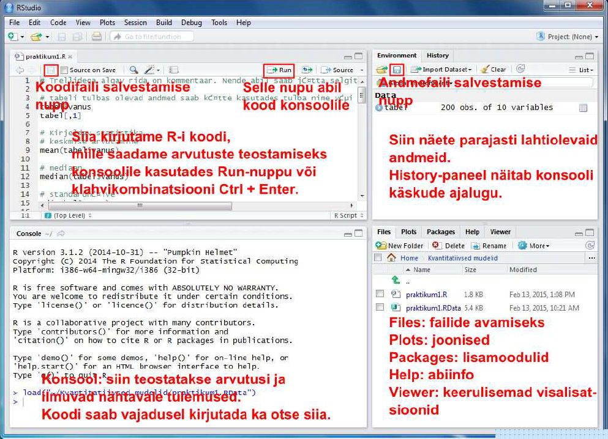

Arvutiklassi arvutites on need programmid juba olemas, aga kui on soovi paigaldada RStudio ka enda arvutisse, siis kasutage järgnevaid linke:
Laadige alla praktikumi koodi ja andmeid sisaldav zip-fail Moodle’ist. Pakkige zip-fail lahti. Selles on 2 faili: koodifail praktikum1.R ja andmefail praktikum1.RData.
Käivitame RStudio. Avanema peaks allolev pilt.
Joonis 1. RStudio ülevaade
Avame zip-failis olnud koodifaili praktikum1.R ja andmefaili prakitkum1.RData kasutades ülaloleval joonisel osutatud nuppe või RStudio aknas paremal all osas paiknevat paneeli Files. Kui soovime olemasoleva koodifaili asemel avada hoopis uut tühja koodifaili, siis seda saab teha valides RStudio menüü-ribalt File ja sellest New File -> R Script.
Nüüd peaks meil RStudio aknas lahti olemas 4 osa. Erinevate osade funktsioonid on toodud allpool. 
Üleval vasakul olevasse ossa kirjutame koodi, mille abil ütleme R-ile, mida me tahame, et see andmetega teeks. Kuidas koodi R-ile saatmine käib? Kui soovime saata ainult ühte rida korraga tuleb kõige pealt klõpsata sellel koodireal, mida soovime R-ile saata (nii et kursor hakkab vilkuma sellel real) ja seejärel vajutada koodiredaktori paneeli paremal ülaosas paiknevat nuppu Run. Nupu asemel võib kasutada ka klahvikombinatsiooni Ctrl + Enter (Maci arvutitel Cmd + Enter). Kui soovime saata mitut koodirida korraga, tuleb need koodiredaktoris valida (st teha hiirega siniseks) ja seejärel vajutada Run-nuppu või klahvikombinatsiooni.
All vasakul on konsool (Console). Seal asubki arvutusi teostav R ise. Kui laseme R-il midagi arvutada, ilmuvad tulemused nähtavale just selles osas. Koodi võib põhimõtteliselt kirjutada ka otse siia, aga enamasti on mugavam kirjutada kood üleval valmis ja seejärel alla konsooli saata. Nii on lihtsam koodi vajadusel parandusi teha ja koodi korduvkasutada.
All paremal asub 5 erinevat paneeli:
Üleval paremal asub 2 paneeli:
Joonis 3. RStudio Global Environment
Klõpsates tabeli nime ees oleval sinisel nupul peaks avanema allolev pilt.
Joonis 4. RStudio ülevaade
Meile näidatakse tabelis olevate tulpade nimesid, andmetüüpe ja esimesi andmepunkte. Esimene tulp/muutuja kannab nime “vanus”. Andmetüüp on int , mis tuleb inglisekeelsest sõnast integer ehk täisarv, st. tegemist on tulbaga, milles sisalduvad andmed on täisarvud. (Teine R-is levinud numbriliste andmete tüüp on num ehk numeric, mis võib sisaldada ka komakohaga arve.) Teine tulp kannab nime “elukoht”" ja selle tüübiks on märgitud Factor w/ 2 levels „maa“ , „linn“. Factor tähendab R-i kontekstis kategooriaid sisaldavat muutujat. Antud juhul on neid kategooriaid 2 tükki: „maa“ ja „linn“. Kõik ülejäänud tabelis olevad muutujad sisaldavad sarnaselt esimese tulbaga täisarvulist tüüpi andmeid (int).
Ülesanded - RStudio kasutamine
Enne alustamist veenduge, et Teil oleks RStudio töökeskkonnas (Global Environment) vastav andmetabel olemas (Joonis 3.).
R’i üks suurimaid eeliseid SPSS’i ees on võimalus andmeid kiirelt kohandada enda vajadustele.
Siin tutvustame kolme võimalust:
Veergude erladamine
R’is saab kergesti kasutada funktsioone muutujate peal eraldi. Et arvutada tabelis oleva muutuja kohta statistilisi näitajaid, peame teadma, kuidas tulbas olevad andmed koodi abil kätte saada. Selleks peame teadma nii andmetabeli nime kui ka tulba nime või tulba järjekorranumbrit. Tulbas vanus olevad andmed saame muutuja nime abil kätte nii:
Dollari märgi abil:
tabel$vanusNurgeliste sulgudega:
tabel[,1]Funktsiooniga subset:
subset(tabel, select = vanus) # üks veerg
subset(tabel, select = c(vanus, elukoht)) # kaks veergu. NB! lisasime c() - see näitab, et anname argumendiks vektori. Kuidas eemaldada veerge?
Kasutage miinusmärki:
subset(tabel, select = -c(vanus, elukoht)) # eemaldab veerud vanus ja elukoht
tabel[,1] # eemaldab esimese veeru
tabel[-1,] # eemaldab esimese reaRidade eraldamine
Järjekorra numbri abil saab ridasid samamoodi eraldada nagu veerge:
tabel[1,] #esimne ridatabel[1:5,] #esimesed viis ridaTingimuste kasutamine
Kuidas valida ridu, mis vastavad teatud tingimustele? Proovime näiteks võtta andmestikust need read, kus vaadeldava isiku vanus on alla 30. Nurgeliste sulgudega:
tabel[tabel$vanus<30,]Funktsiooniga subset:
subset(tabel, vanus < 30)Sageli on vaja võtta andmetest välja read, mis on ühe muutuja suhtes võrdsed. Näiteks püüame eraldada andmetest kõik read, kus elukoha väärtus on “maa”. Saame kasutada juba tuttavat ridade ja veergude määratlust:
tabel[tabel$elukoht == "maa",] Samasuguse tulemuse saame ka funktsiooniga subset
subset(tabel, elukoht == "maa")Ülesanded - andmetega manipuleerimine
1. Eraldage andmetest veerg “vanus”. Looge uus muutuja, kus on ainult see veerg.
2. Tehke kaks uut andmestikku. Esimesse salvestage maal elavata katseisikute tulemused ja teise salvestage linnas elavate katseisikute tulemused.
Nüüd, kui teame, kuidas anda R’ile edasi ainult üks muutuja andmestikus, proovime saada selgemat ülevaadet muutujast vanus.
Kekmise vanuse saame andes funktsioonile mean argumendiks muutuja vanus:
mean(tabel$vanus)Mediaani saame funktsiooni median abil
median(tabel$vanus)Standardhälve
sd(tabel$vanus)Miinimum ja maksimum
min(tabel$vanus)
max(tabel$vanus)Puuduvad väärtused
Kui tulbas esineb puuduvaid väärtusi, annab R meile statistiku väärtuseks samuti puuduva väärtuse ehk NA (not available):
mean(tabel$sotsiaalsus)Selleks, et puuduvad väärtused arvutustest välja jätta tuleb kirjeldava statistika funktsioonidele ette anda täiendav argument na.rm=TRUE
mean(tabel$sotsiaalsus, na.rm=TRUE)
median(tabel$sotsiaalsus, na.rm=TRUE)Kategooriaid sisaldava tunnuse kirjeldamisel on abiks sagedustabel:
table(tabel$elukoht)Protsentuaalse jaotuse saame lisades sagedustabeli ümber funktsiooni prop.table:
prop.table(table(tabel$elukoht))Ülesanded - kirjeldav statistika
1. Leidke sotsiaalsuse, meelekindluse, ekstravertsuse, neurootilisuse ja avatuse keskmised tulemused.
2. Kasutage funktsiooni summary(). Andke argumendiks üks veerg. Andke argumendiks terve tabel. Mida see funktsioon väljastab?
3. Millises vahemikus varieeruvad ekstravertsuse skoorid?
Kahe muutuja vahelise korrelatsioonikordaja väätuse saame andes need muutujad argumentideks funktsioonile cor:
cor(tabel$vanus, tabel$depressioon)Funktsioonile cor saab ette anda ka mitu muutujat korraga kasutades andmetabeli tulpade järjekorranumbreid. Sellisel juhul tagastatakse meile korrelatsioonimaatriks.
cor(tabel[,3:7])Nagu näha on mõnede korrelatsioonikordajate väärtuseks puuduv väärtus ehk NA. Funktsiooni cor puhul käib puuduvate väärtuste välja jätmine argumendi use abil. use=“complete.obs” jätab kasvõi ühe puuduva väärtusega inimese andmed välja kõigist arvutustest. use=“pairwise” jätab inimese välja aga ainult nendest arvutustest, mille puhul tal esineb puuduvaid andmeid:
cor(tabel[,3:7], use="complete.obs")Kuna antud juhul on puuduvaid andmeid väga vähe, on puuduvate andmete eemaldamise meetodi kasutamise puhul erinevused vaevumärgatavad:
cor(tabel[,3:7], use="pairwise")Korrelatsioonimaatriksit on enamasti parem jälgida väiksema komakohtade arvu puhul. Ümardamise saame lisades funktsiooni cor ümber funktsiooni round ja andes sellele ette soovitava komakohtade arvu.
round(cor(tabel[,3:7], use="complete.obs"), 2)Vahel soovime teada ka korrelatsioonikordaja statistilist olulisust. Selle saame funktsiooni cor.test abil.
cor.test(tabel$neurootilisus, tabel$stateanx)Funktsiooni väljund näeb välja selline: P-väärtus on väljundis antud kujul 4.809e-13. See tähistab arvu 4.809 korda 10 astmel -13, \(4.809 \times 10^{-13}\) ehk tegemist on väga väikese arvuga ja seega võib korrelatsioonikordajat lugeda statistiliselt oluliseks. Väga väikeste või väga suurte arvude puhul kasutabki R-i sellist tähistust.
Ülesanded - korrelatsioon
1. Kui tugev on seisundi- ja püsiärevuse vaheline korrelatsioon?
2. Kui tugev on neurootlisuse ja ekstravertsuse vaheline korrelatsioon?
3. Kui tugev on depressiooni ja püsiärevuse vaheline korrelatsioon?
4. Kas need korrelatsioonikordajad on statistiliselt olulised?
T-testi abil saab võrrelda, kas kahe grupi keskmised erinevad statistiliselt olulisel määral. T-testi saab R-is kätte andes funktsioonile t.test ette numbrilise tunnuse (antud juhul vanus) ja grupeeriva tunnuse (antud juhul elukoht) alljärgneval kujul:
t.test(tabel$vanus~tabel$elukoht)või sellisel kujul:
t.test(vanus~elukoht, data=tabel)Ülesanded - t-test
Allpool on toodud mõned veebilehed, mis võivad osutuda kasulikuks, kui soovite R-i omal käel natuke lähemalt tundma õppida.